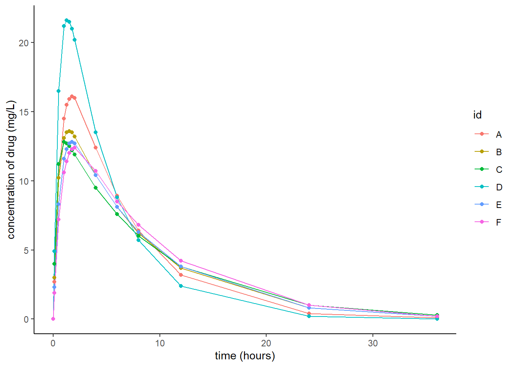
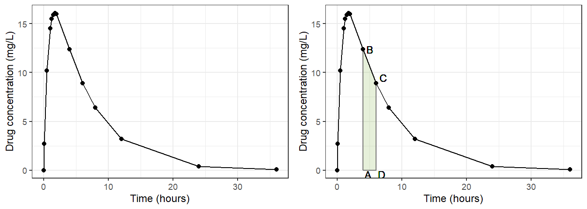
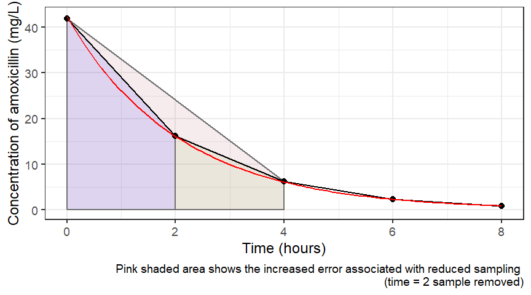

Introduction to non-compartmental analysis using R
Learning outcomes
By the end of this session you should be able to:
Interpret a concentration-time plot
Use R to undertake basic, descriptive (non-compartmental) analysis of pharmacokinetic data to estimate
- \(C_{max}\)
- \(T_{max}\)
- \(AUC_{0-t}\)
Describe the relationship between clearance, dose and \(AUC\)
List benefits and limitations of non-compartmental PK analysis
Tasks
Make a concentration-time plot for the ‘Healthy’ dataset
Make a concentration-time plot for ‘Sepsis’ dataset
Estimate \(C_{max}\), \(T_{max}\) and \(AUC_{0-t}\) for the ‘Healthy’ dataset
Estimate \(C_{max}\), \(T_{max}\) and \(AUC_{0-t}\) for the ‘Sepsis’ dataset
Estimate \(Cl\) for the ‘Healthy’ dataset
Estimate \(Cl\) for the ‘Sepsis’ dataset
Extension tasks:
Plot ‘Healthy’ and ‘Sepsis’ datasets on the same Figure
Make a table to compare \(C_{max}\), \(T_{max}\) and \(AUC_{0-t}\) for ‘Healthy’ and ‘Sepsis’ datasets
Packages you need for this session
library(tidyverse)
library(PKNCA)
library(DescTools)Teaching data for this session
This workbook uses PK data for an anti-epileptic drug. 6 participants were given an IV dose and then one week later they were given an oral dose. Drug concentrations were measured.
If you want to access these datasets yourself you can copy the code below.
IV<-read.csv("https://raw.githubusercontent.com/dlonsdal/non_compartmental/main/docs/PK_IV.csv")
ORAL<-read.csv("https://raw.githubusercontent.com/dlonsdal/non_compartmental/main/docs/PK_oral.csv")The first six lines of the ORAL dataset are shown here.
head(ORAL)## id time sex study conc
## 1 A 0.00 Male ORAL 0.0
## 2 A 0.10 Male ORAL 2.7
## 3 A 0.50 Male ORAL 10.2
## 4 A 1.00 Male ORAL 14.5
## 5 A 1.25 Male ORAL 15.5
## 6 A 1.50 Male ORAL 15.9Columns in these datasets are:
- id = patient ID
- time = time after dose administered
- study = whether IV or ORAL study
- conc = drug concentration
How to: Plot the data for the ORAL data.
Hint: More detailed notes on putting together plots are included in the Introduction to R page
ggplot(data=ORAL,aes(x=time, y=conc,col=id) )+
geom_line()+
geom_point()+
theme_classic()+
xlab("time (hours)")+
ylab("concentration of drug (mg/L)")
Estimating \(C_{max}\)
\(C_{max}\) is observed from our data. We find the max value per participant and report it.
How to:
- Estimate \(C_{max}\) for the oral data
- Estimate the mean \(C_{max}\) for the oral data
# here we tell R to take 'ORAL', group by 'id' then give the max conc
ORAL %>%
group_by(id) %>%
summarise(cmax=max(conc))## # A tibble: 6 × 2
## id cmax
## <chr> <dbl>
## 1 A 16.1
## 2 B 13.6
## 3 C 12.8
## 4 D 21.6
## 5 E 12.8
## 6 F 12.4# here we tell R to take 'ORAL', group by 'id' then give the max conc
ORAL %>%
group_by(id) %>%
summarise(cmax=max(conc)) %>%
ungroup() %>%
summarise(mean(cmax))## # A tibble: 1 × 1
## `mean(cmax)`
## <dbl>
## 1 14.9# we can also output the results for both datasets together
FULL<-rbind(IV,ORAL) # to combine the two datasets
FULL %>%
group_by(id,study) %>%
summarise(max(conc))## # A tibble: 12 × 3
## # Groups: id [6]
## id study `max(conc)`
## <chr> <chr> <dbl>
## 1 A IV 36
## 2 A ORAL 16.1
## 3 B IV 27.3
## 4 B ORAL 13.6
## 5 C IV 24.1
## 6 C ORAL 12.8
## 7 D IV 47.8
## 8 D ORAL 21.6
## 9 E IV 26.6
## 10 E ORAL 12.8
## 11 F IV 26.3
## 12 F ORAL 12.4FULL %>%
group_by(id,study) %>%
summarise(cmax=max(conc),.groups="drop") %>%
group_by(study) %>%
summarise(mean(cmax))## # A tibble: 2 × 2
## study `mean(cmax)`
## <chr> <dbl>
## 1 IV 31.4
## 2 ORAL 14.9Estimating \(T_{max}\)
This is a little more tricky. We need to get R to find \(C_{max}\) and then keep the associated value for time.
How to: Estimate \(T_{max}\) for the IV and oral data
ORAL %>%
group_by(id) %>%
summarise(cmax=max(conc),
tmax=time[which.max(conc)])## # A tibble: 6 × 3
## id cmax tmax
## <chr> <dbl> <dbl>
## 1 A 16.1 1.75
## 2 B 13.6 1.5
## 3 C 12.8 1
## 4 D 21.6 1.25
## 5 E 12.8 1.75
## 6 F 12.4 2FULL %>%
group_by(id,study) %>%
summarise(cmax=max(conc),
tmax=time[which.max(conc)],.groups="drop") %>%
group_by(study) %>%
summarise(mean(cmax),
mean(tmax)) ## # A tibble: 2 × 3
## study `mean(cmax)` `mean(tmax)`
## <chr> <dbl> <dbl>
## 1 IV 31.4 0
## 2 ORAL 14.9 1.54Estimating the area under the curve (\(AUC_{0-t}\))
\(AUC_{0-t}\) is the area under the time concentration curve from \(time=0\) to \(time=t\) (\(t\) will usually be the time of the last observed sample but it doesn’t have to be). In non-compartmental analysis, this is often estimated using a method that breaks up the time concentration data into small chunks, estimates the area under each chunk and adds them together. The most straightforward way of doing this is using the trapezoid method.

Figure 1: Participant ‘A’ oral concentration-time profile, with trapezoids indicated in colour
To calculate the area under the curve of the trapezoid ABCD in Figure 1 we use the equation for the area of a trapezoid. \[Area = \frac{1}{2}*(height_{1,AB}+height_{2,CD})*base_{AD}\] The two heights correspond to concentrations B and C and the base is the distance A to D (the change in time \(\Delta t\)) in Figure 1. So more fully for this example, where height is replaced with concentration \((C)\): \[AUC_{0-8} = \sum_{t=0}^{t=8} \Delta t\frac{(C_1+C_2)}{2}\]
Fortunately, R has an inbuilt function that allows us to calculate the \(AUC\). The handily named AUC() function. You need to provide it with three commands, x=…,y=… and method=“trapezoid”. It is in the DescTools library.
Here is how to calculate using the oral data:
ORAL%>%
group_by(id) %>%
summarise(AUC=AUC(time,conc,method='trapezoid'))## # A tibble: 6 × 2
## id AUC
## <chr> <dbl>
## 1 A 133.
## 2 B 131.
## 3 C 130.
## 4 D 139.
## 5 E 129.
## 6 F 136.How to:
- Calculate mean \(AUC\) for each dataset
- Estimate the bioavailability (\(F\)) of the drug
FULL %>%
group_by(id,study) %>%
summarise(AUC=AUC(time,conc,method='trapezoid')) %>%
group_by(study) %>%
summarise(mAUC=
mean(AUC)) ## # A tibble: 2 × 2
## study mAUC
## <chr> <dbl>
## 1 IV 223.
## 2 ORAL 133.FULL %>%
group_by(id,study) %>%
summarise(AUC=AUC(time,conc,method='trapezoid')) %>%
group_by(study) %>%
summarise(mAUC=
mean(AUC)) %>%
summarise(F=mAUC[study=="ORAL"]/mAUC[study=="IV"])## # A tibble: 1 × 1
## F
## <dbl>
## 1 0.598Limitations of the linear trapezoid method

Figure 2: Participant ‘A’ IV concentration-time profile with curved line of best fit
It is worth noting the trapezoid method has limitations. Most notably that it will overestimate \(AUC\) by virtue of taking a straight line between points, when the true concentration will fall in an logarithmic (curve) fashion (Figure 2). There are methods to improve this accuracy, such as the logarithmic trapezoidal method. With this method, the ‘trapezoid’ is given a curved top (like the red line in Figure 2). The formula for this method is \[AUC = \sum_{t=0}^{t=\tau} \frac{\Delta t}{ln(\frac{C_1}{C_2})} (C_1+C_2)\]
Using R package PKNCA to undertake non-compartmental analysis
If that all seems like too much hard work and R should just jolly well get on and do for us then you are right! There are a few non-compartmental analysis packages available, we will use PKNCA. Remember you will need to run install.packages(“PKNCA”) the first time you wish to use this package, once it has been installed you need to run library(PKNCA).
How to:
- Use PKNCA to undertake non-compartmental analysis on the oral teaching dataset
To run non-compartmental analysis using this package, we need to give PKNCA some dosing data. All the participants were given a dose of 1000 mg of the anti-epileptic at time \(t=0\). To add a new column (variable) using %>% we use the mutate function.
dORAL<-ORAL %>% # we will need to save this as a new object
subset(time==0) %>%
mutate(dose=1000) #this produces a new variable dose 1000Now we can call and run PKNCA. First we create a sampling (or concentration) object and then a dosing object. In each function we instruct PKNCA of the names of our data object and the relevant variables in it. Then we combine the two and run our non-compartmental analysis.
conc1<-PKNCAconc(ORAL, conc~time|id) #create sampling object
dose1<-PKNCAdose(dORAL, dose~time|id) #create dosing object
full1<-PKNCAdata(conc1, dose1) #combine
results1<-pk.nca(full1) # analyse
summary(results1) #summarise the results| start | end | N | auclast | cmax | tmax | half.life | aucinf.obs |
|---|---|---|---|---|---|---|---|
| 0 | 24 | 6 | 122 [3.80] | . | . | . | . |
| 0 | Inf | 6 | . | 14.6 [21.7] | 1.62 [1.00, 2.00] | 5.15 [1.08] | 128 [2.03] |
Look at the value for \(AUC\) produced here and compare it to the one earlier. There is a discrepancy because by default, PKNCA uses a slightly different method to calculate \(AUC\).
Clearance, half-life and volume of distribution
Clearance (\(Cl\))
Clearance describes the volume of plasma from which drug is completely removed per unit time.
\[Cl = \frac{Dose}{AUC_{0-\infty}}\]
Note that this relationship holds exactly only for IV administration. For oral data, the calculated value reflects apparent clearance (\(Cl/F\)), since bioavailability (\(F\)) cannot be separated from clearance without an IV reference.
Volume of distribution (\(V_d\))
Volume of distribution describes how widely a drug distributes through the body. It is not a real anatomical volume — it is a proportionality constant relating the total amount of drug in the body to the measured plasma concentration.
For IV data, \(V_d\) can be estimated by back-extrapolating the concentration-time curve to \(t=0\) to obtain \(C_0\):
\[V_d = \frac{Dose}{C_0}\]
For oral data this approach is not valid, as absorption is not instantaneous and \(C_0\) cannot be meaningfully defined. Instead, only apparent volume of distribution (\(V_d/F\)) can be estimated from oral data, since bioavailability (\(F\)) cannot be separated from \(V_d\) without an IV reference:
\[V_d/F = \frac{Cl/F \times t_{1/2}}{0.693}\]
Half-life (\(t_{1/2}\))
Half-life is the time taken for drug concentration to fall by half. For a drug following one-compartment kinetics with first-order elimination, this is constant regardless of the starting concentration:
\[t_{1/2} = \frac{0.693 \times V_d}{Cl}\]
Limitations of non-compartmental analysis

Figure 3: Concentration-time profile showing impact of reduced sampling on AUC calculation
Non-compartmental analyses are useful for many reasons. For example, they use relatively straightforward algebra with few assumptions about the data to calculate summary pharmacokinetic information. Most regulators will require non-compartmental analysis of data as part of regulatory submissions.
There are some disadvantages that are worth being aware of. These include:
- Need for rich sampling (multiple samples from each subject)
- Use of direct observation of \(C_{max}\) and \(T_{max}\) means true values are missed for any particular subject
- Increasing accuracy requires increased number of participants or samples, which can be technically challenging and expensive
Have a look at Figure 3, where a situation is imagined that \(time=2\) data point is not sampled. You can see the likely impact on the estimate of AUC from this.